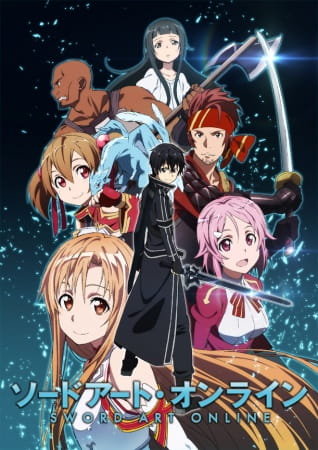

While I don't watch anime as much, I can confidently say that anime change me for the better growing up, and I wanted to show that by sharing a few of the different shows I watched when I was younger.
Charlotte: Charlotte was the first anime I ever watched, and that's why it is first on the list here. The show is about a boy, Yuu Otosaka, who mysteriously gains the ability to inhabit other people's bodies for 5 seconds. He finds himself in the crosshair of Nao Tomori, someone who also has a special ability, specifically to make themselves invisible to one person. She recruits him to find and deal with other power-wielding troublemakers in the city, but this just touches the surface of the story, as it gets very deep.
Angel Beats: Angel beats is a show that was also written by the same person who made Charlotte, named Jun Maeda. This show is about the afterlife, and what happens to a large group of teenagers who are sent to this afterlife after their untimely death in the actual world, and need to fight against both "Angel"s and god himself. This show has a really moving message and is really fun to watch throughout.
How To Keep A Mummy: How to raise a mummy is a really nice show about a teenager, Sora Kashiwagi, who gets a present from his father, who travels and explores around the world. This present arrives in a.. Coffin? And actually opening the coffin reveals the present to be a… toy-sized mummy…? This show is meant to be a slice-of-life of Sora and the mummy, named Mii-kun, living through life and bonding together.
 Sword Art Online: If you have watched any sort of anime, you have most likely heard about Sword Art Online. This anime follows the story of Kazuto Kirigaya, Also known as Kirito, who gets trapped in a Virtual reality world called Aincrad, with 9,999 other people. The only way to make it out is to get to the top of the world, which spans a whopping 100 floors. However, if you die in the game, you die in real life. This anime is Iconic for having released at the time it did, creating massive popularity across the scene, and I personally really love it.